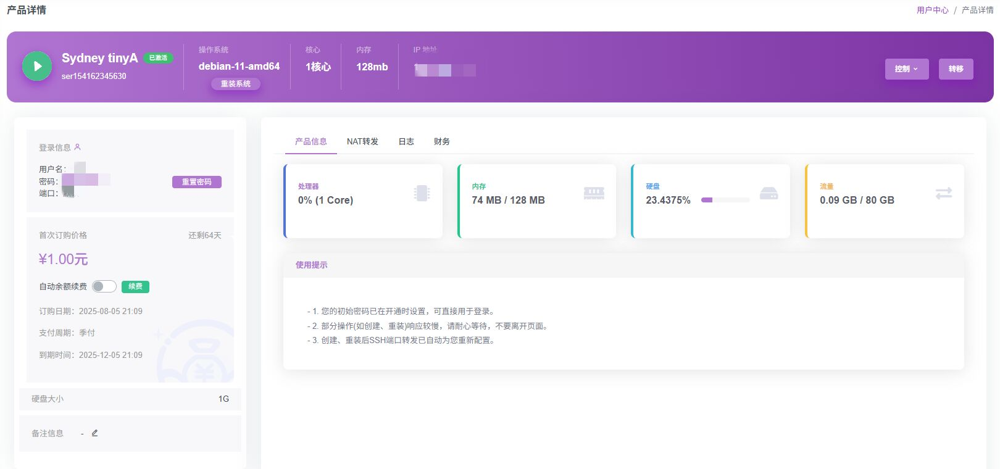
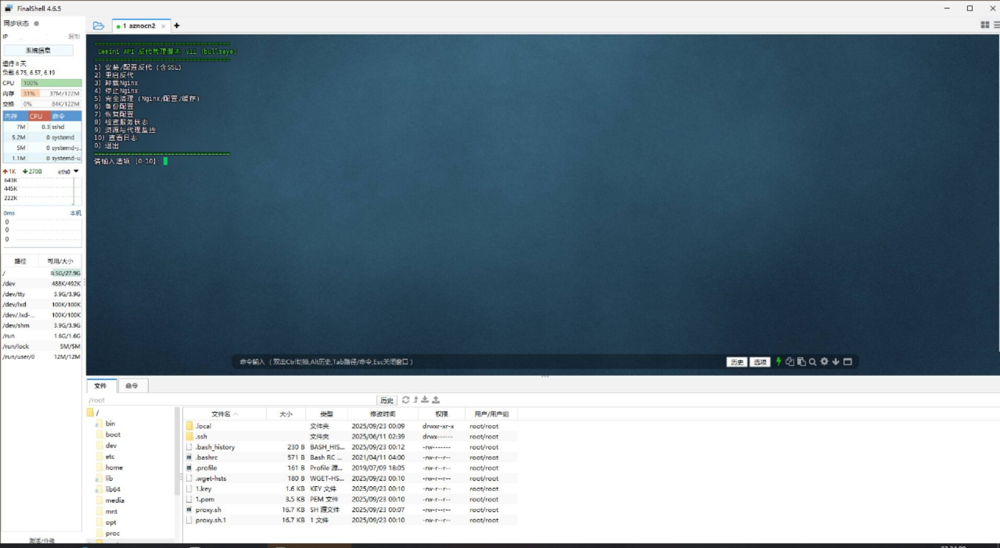
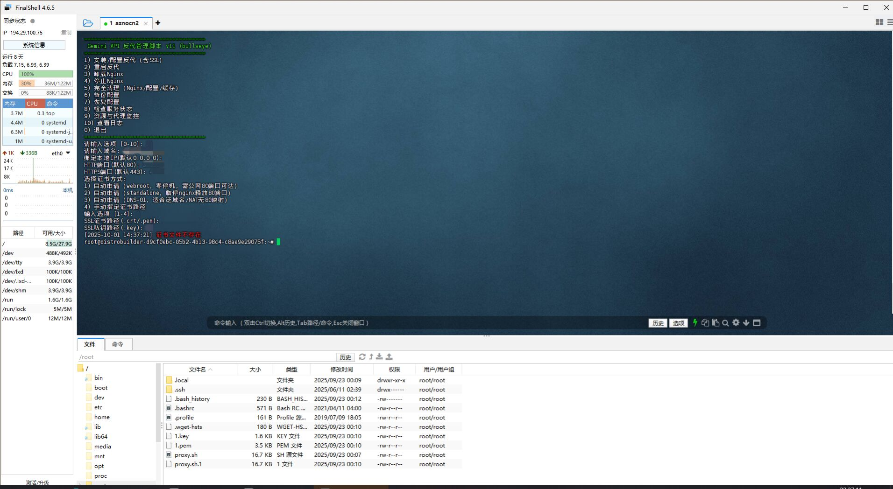
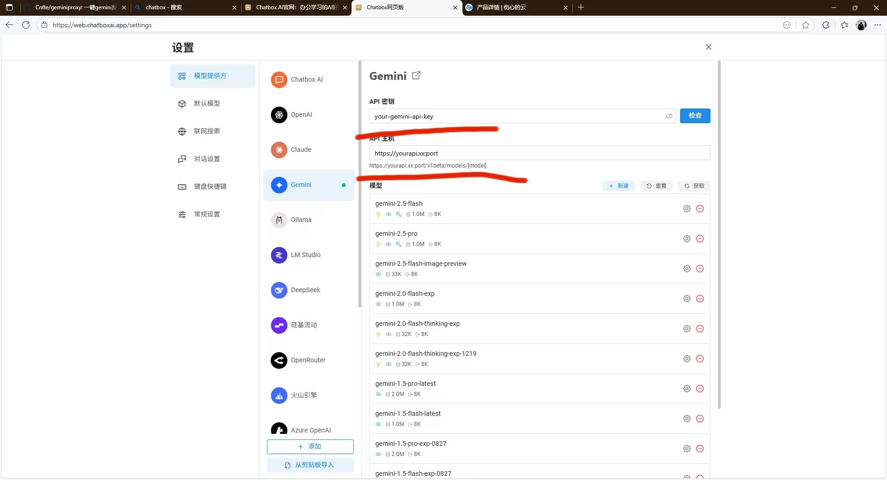

快速开始
GeminiProxy 是一款专为国内用户优化的一键式 Gemini API 反向代理脚本。通过简单的 Shell 指令，即可在您的 VPS 上搭建稳定的 API 通道，并附带完整的后续运维管理菜单（重启、备份、监控、访问控制等）。
功能特性
- 单一命令完成部署，支持 Ubuntu / Debian / CentOS / RHEL / Fedora / Rocky / AlmaLinux / Arch / openSUSE / Alpine
- 自动优化网络连接，解决 Gemini 访问受阻问题
- 集成 Nginx 自动配置，支持 4 种 SSL 证书获取方式
- 内置 Basic Auth 密码保护与 IP 白名单访问控制
- 提供备份/恢复、状态检查、资源监控、日志查看、证书续期等 12 项管理功能
1. 服务器准备
部署前请确保您拥有一台具备公网 IP 的服务器（或已配置端口映射的 NAT 服务器），并建议使用 root 用户登录，脚本运行时也会检查 root 权限。推荐使用马来西亚、韩国、日本等亚洲区域，或欧洲的 VPS 以获得更佳延迟。

2. 执行安装命令
注意： 若选择自动申请证书，请确保您的域名已解析至当前服务器 IP。NAT 服务器用户若无法把公网 80 端口映射到本机，请在证书方式中选择 DNS-01 模式。
在 SSH 终端（推荐使用 Xshell 或 FinalShell）中复制并运行以下任一命令：
# 推荐方式：下载、执行并自动清理
wget https://raw.githubusercontent.com/Cnfte/geminiproxy/refs/heads/main/proxy.sh && sudo bash proxy.sh && rm proxy.sh
脚本会打印如下管理菜单，首次安装请输入数字 1：
=====================================
Gemini API 反代管理脚本 by cnfte v2.2.0
=====================================
1) 安装/配置反代（含SSL）
2) 重启反代
3) 停止Nginx
4) 卸载Nginx
5) 完全清理（Nginx/配置/缓存）
6) 备份配置
7) 恢复配置
8) 检查服务状态（含证书到期提醒）
9) 资源与代理监控
10) 查看日志
11) 访问控制管理（Basic Auth / IP白名单）
12) 手动续期证书
0) 退出随后脚本会依次询问域名、绑定IP、HTTP/HTTPS 端口，请根据提示完成录入：

3. 证书获取方式
安装过程中需要在以下 4 种方式中选择一种用于签发或指定 SSL 证书：
| 选项 | 方式 | 说明 |
|---|---|---|
| 1 | webroot | 自动申请，零停机，要求公网 80 端口可正常访问 |
| 2 | standalone | 自动申请，会临时停止 Nginx 释放所选 HTTP 端口用于验证；若该端口非 80，需确保路由器/NAT 已把公网 80 转发到本机对应端口，否则请改用 DNS-01 |
| 3 | DNS-01 | 自动申请，适合泛域名或 NAT 无 80 端口映射的场景；需提前导出对应 DNS 服务商的 API 环境变量（如 Cloudflare 的 CF_Token），并输入 DNS API 标识（如 dns_cf） |
| 4 | 手动指定 | 直接提供已有证书（.crt/.pem）与私钥（.key）路径 |
证书剩余有效期不足 14 天时，"检查服务状态"（菜单 8）会高亮提醒，可通过菜单 12 手动续期。
4. 客户端配置
安装成功后，您可以在 Chatbox 等 AI 客户端中直接填入您的代理域名进行通信。

关于 API Key： 本脚本不提供 Key，您需要前往 Google AI Studio 自行获取。脚本仅代理 Gemini 官方 API，不做 OpenAI 格式转换。
5. 管理菜单一览
安装完成后，重新运行脚本会进入同一菜单，可随时执行以下管理操作：
| 菜单项 | 功能说明 |
|---|---|
| 2 重启反代 | 重启 Nginx 服务 |
| 3 停止Nginx | 停止 Nginx 服务 |
| 4 卸载Nginx | 通过系统包管理器卸载 Nginx 并移除站点配置文件 |
| 5 完全清理 | 卸载 Nginx，并删除相关配置、日志、缓存目录与备份目录 |
| 6 备份配置 | 将 Nginx 站点配置、脚本配置、ACME 校验配置及 Basic Auth 密码文件打包备份 |
| 7 恢复配置 | 从指定备份包恢复以上文件（恢复前会校验包内文件路径，防止异常写入） |
| 8 检查服务状态 | 显示 Nginx 运行状态、配置语法、当前域名/端口/证书配置，以及证书到期天数提醒 |
| 9 资源与代理监控 | 每 5 秒刷新 CPU、内存、磁盘占用、当前连接数及代理接口 HTTP 状态码 |
| 10 查看日志 | 查看 Nginx 访问日志、错误日志、脚本日志，或三者聚合查看（需安装 multitail） |
| 11 访问控制管理 | 启用/关闭 Basic Auth 密码保护，设置或清除 IP 白名单 |
| 12 手动续期证书 | 通过 acme.sh 手动触发证书续期并重启 Nginx |
6. 访问控制
在菜单 11 中可以为反代接口增加两类访问限制，二者可同时启用：
- Basic Auth 密码保护：设置用户名和密码后，访问代理域名时需要输入凭证。
- IP 白名单：填入允许访问的 IP / CIDR（多个用空格分隔），仅白名单内的地址可访问，其余一律拒绝。
启用 IP 白名单前请确认自己当前的出口 IP 已在名单内，避免把自己锁在服务之外。
7. 监控与日志
菜单 9 资源与代理监控会每 5 秒刷新一次 CPU、内存、磁盘占用、当前 HTTPS 连接数，以及对 /v1/models 接口发起探测得到的 HTTP 状态码，便于快速判断代理是否可用。
菜单 10 查看日志可选择：Nginx 访问日志、Nginx 错误日志、脚本运行日志，或在安装了 multitail 的情况下三者聚合实时查看。
8. 配置与日志路径
| 用途 | 路径 |
|---|---|
| 脚本配置文件 | /etc/gemini_proxy.conf |
| Nginx 站点配置 | /etc/nginx/conf.d/chat.conf |
| 脚本运行日志 | /var/log/gemini_proxy.log |
| Nginx 访问日志 | /var/log/nginx/gemini_access.log |
| Nginx 错误日志 | /var/log/nginx/gemini_error.log |
| 配置备份目录 | /var/backups/gemini_proxy |
配置完成后，即可享受无缝的 Gemini 交互体验！